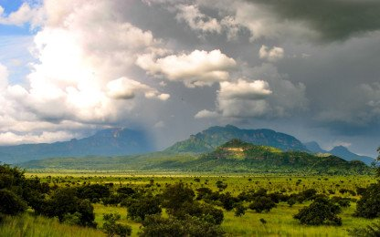

From a lively cattle market to a quiet night beneath the stars, discover Karamoja through its landscapes, community life and wildlife.

Travel into Nakapiripirit for a local-led community tour, see the cattle market and explore Pian Upe. Continue to Moroto for a waterfall hike, then visit the Nawoikorot Idi Amin mass graves in Napak and discover Kotido and Nakapelimoru before ending with a game drive in Kidepo Valley National Park.
The itinerary follows the route provided by Mt. Kadam Tours. Accommodation, transfers and activity arrangements are confirmed with you when your dates and group size are discussed.
Activities and timing may be adjusted with your guide to suit local conditions.
Prices are per person, as provided. Confirm availability and final inclusions when booking.
| Group size | Price per person |
|---|---|
| 1 guest | $500 |
| 2–5 guests | $450 |
| 6–10 guests | $400 |
Ask us to confirm what is included in your quotation, including accommodation, meals, transport and park or activity fees.
Share your preferred dates and group size and we’ll help plan the details of your trip.